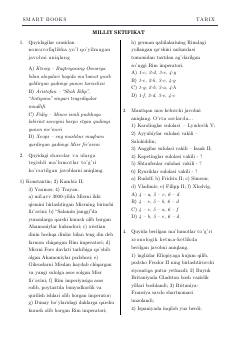

MSTarix fanidan milliy sertifikat imtihonlariga tayyorgarlik uchun testlar to'plami.
Mazkur qo'llanma tarix fanidan milliy sertifikat imtihonlariga tayyorgarlik ko'rayotgan abituriyentlar va o'quvchilar uchun mo'ljallangan test topshiriqlarini o'z ichiga oladi. Kitobda jahon tarixi va O'zbekiston tarixiga oid turli murakkablikdagi savollar, atamalar va xronologik masalalar jamlangan.